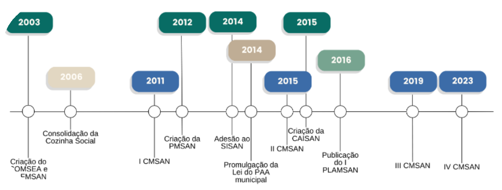

Sistema de Segurança Alimentar e Nutricional no Município de Toledo – PR
No Município de Toledo, a abordagem em relação à Segurança Alimentar e Nutricional (SAN) refletiu a orientação do governo federal iniciando de modo mais incisivo em meados dos anos 2000. Uma cronologia dos principais acontecimentos em SAN pode ser observada:
Linha do tempo com as principais ações de construção da política de SAN no município de Toledo.
Legenda: COMSEA: Conselho Municipal de Segurança Alimentar e Nutricional. FMSAN: Fundo Municipal de Segurança Alimentar e Nutricional. CMSAN: Conferência Municipal de Segurança Alimentar e Nutricional. PMSAN: Política Municipal de Segurança Alimentar e Nutricional. SISAN: Sistema Nacional de Segurança Alimentar e Nutricional. PAA: Programa de Aquisição de Alimentos. CAISAN: Câmara Intersetorial de Segurança Alimentar e Nutricional. PLAMSAN: Plano Municipal de Segurança Alimentar e Nutricional.
Em 2003, o Conselho Municipal de Segurança Alimentar e Nutricional e o Fundo Municipal da Segurança Alimentar foram estabelecidos por meio da Lei n° 1.875. Nos anos subsequentes, pela Lei nº 2.117, de 26 de dezembro de 2012, foi instituída a Política Municipal de Segurança Alimentar e Nutricional Sustentável, cujo objetivo é promover ações e políticas destinadas a garantir o Direito Humano à Alimentação Adequada e o desenvolvimento integral da pessoa humana. Esse direito, conforme definido por esta Lei, é absoluto, intransmissível, indisponível, irrenunciável, imprescritível e de natureza extrapatrimonial. Nesse momento então, por meio de ofício enviado pelo COMSEA à Prefeitura Municipal de Toledo, foram exigidas ações imediatas para evolução da SAN no município. Foram relacionadas no texto a implantação da CAISAN no município, adesão ao SISAN, realização de uma nova Conferência Municipal de Segurança Alimentar e Nutricional e elaboração do Plano Municipal de Segurança Alimentar e Nutricional. Então, em 2014, houve a promulgação da Lei nº 2.186 que criou os componentes do Município de Toledo do Sistema Nacional de Segurança Alimentar e Nutricional e definiu os parâmetros para elaboração e implementação do Plano Municipal de Segurança Alimentar e Nutricional. Em seu Art. 7º, essa Lei institui que a concretização do Direito Humano à Alimentação Adequada e da Segurança Alimentar e Nutricional da população será realizada por meio do SISAN, integrado no Município de Toledo, Estado do Paraná, por um conjunto de órgãos e entidades dedicados à Segurança Alimentar e Nutricional. Já a CAISAN teve sua implantação consolidada durante a II Conferência de Segurança Alimentar e Nutricional em 2015. Após inúmeras discussões no COMSEA, Cozinha Social e na Secretaria de Administração, houve o entendimento da necessidade de regulamentação e do envolvimento de todas secretarias municipais em esforços para a SAN. Da mesma maneira, também pretendeu-se contar com dotação orçamentária prevista nas secretarias municipais, para efetivação das ações propostas no Plano Municipal de Segurança Alimentar e Nutricional. Portanto, a regulamentação ocorreu em 2015, pelo Decreto nº 634, de 12 de junho de 2015, o qual criou a Câmara Intersetorial Municipal de Segurança Alimentar e Nutricional – CAISAN Municipal.
Quatro conferências de SAN já foram realizadas no Município (saiba mais)
Ao longo dos anos, a SAN teve muitos avanços no município de Toledo. Alguns projetos foram implantados com destaque para a criação da Unidade Central de Produção de Alimentos, a popularmente conhecida Cozinha Social (Decreto nº 307, de 10 de agosto de 2006). O destaque se deve a hoje este ser o local que centraliza a maior parte dos profissionais envolvidos com a SAN no município e responsáveis por coordenar projetos e programas que visam garantir o DHAA no território.
Leis municipais sobre a SAN no município de Toledo (saiba mais)